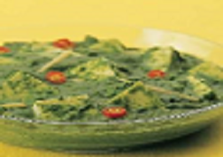

|  | Many of the greatest loved vegetarian Punjabi cusions are the ones where paneer is joined with a vegetable. This mixture of spinach and paneer is not only extremely healthy, but is a superb combination of taste, quality and flavour. The paneer in this technique has been fried to add some advance flavour. |
Ingredients: 10 cups chopped spinach (palak) , refer handy tip, 1 1/2 cups paneer , cut into 12 mm. ( 1/2") cubes, 2 tablespoon oil, 3/4 cup finely chopped onions, 4 cloves garlic , grated, 25 mm (1") piece ginger , grated, 2 green chillies, finely chopped, 1/2 tablespoon turmeric powder (haldi), 3/4 cup fresh tomato pulp, salt to taste, 1 tee spoon punjabi garam masala, 2 tablespoon fresh cream. Method: Blanch the spinach in a vesselful of boiling water for 2-3mins. Drain, refresh with cold water and keep apart to cool for some period. Combination in a blender to a smooth paste and keep apart. Heat the oil in a kadhai, add the onions and fry on a medium flame till they turn radiant. Add the garlic, ginger, green chillies and turmeric (haldi) powder and fry on a medium flame for 1 to 2 mins. Add the tomato paste and fry till the leaves oil, while moving nonstop. Add the spinach paste and 2 table spoon of water, mix well and heat on a medium flame for 2 mins. Add the salt, garam masala and fresh cream and mix well. Add the paneer, mix softly and heat on a medium flame again 1 to 2 mins.
|
||||

Crispy Pizza
Crispy Pizza and Pressed Panini authentic recipe One of the very famous Street Italian food.
Golden Chicken
Crispy and curried Golden chicken recipe for cooking Golden Chicken ghastly.